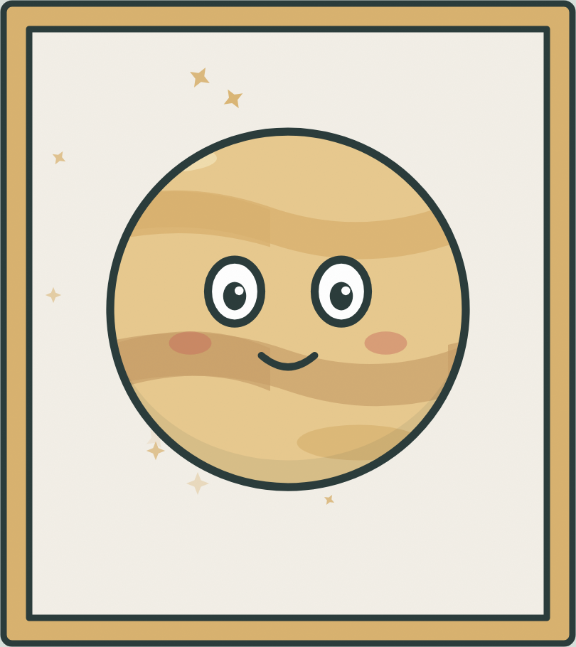
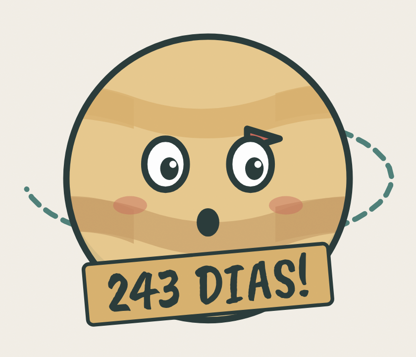
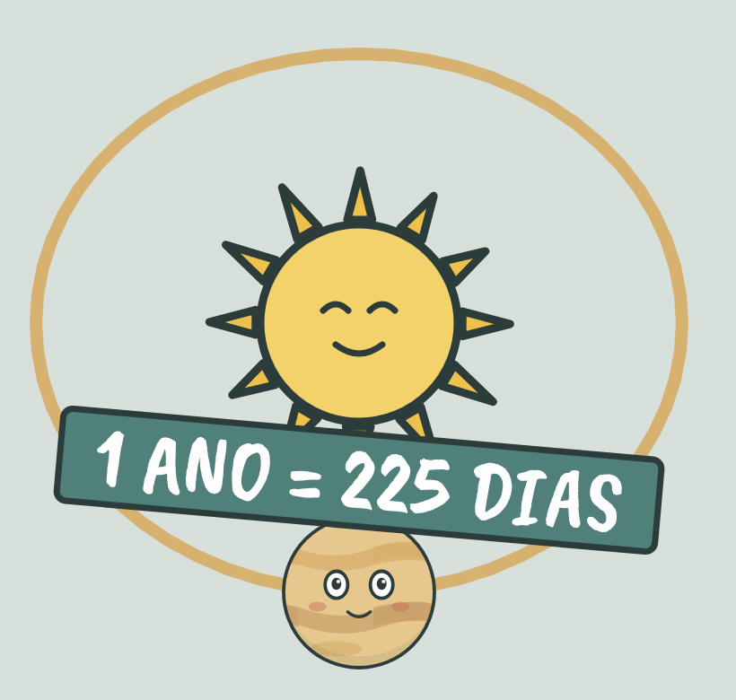

CURIOSIDADE DO DIA
um planeta onde o dia
dura mais que o ano?

VÊNUS!
CURIOSIDADE DO DIA · 2/4
Vênus gira tão devagar
que uma volta em si
mesmo leva…

243 dias da Terra. Esse é o “dia” de lá: uma volta completa no próprio eixo.
CURIOSIDADE DO DIA · 3/4
Mas a volta no Sol,
que é o ano de Vênus,
leva só…

225 dias. Ou seja: lá o dia é mais longo que o ano.
CURIOSIDADE DO DIA · 4/4
E isso nem é o mais estranho.
Em Vênus, o Sol nasce…
do lado
errado 👀
Você já
sabia disso?
O vídeo completo sai hoje no perfil 🪐
SEGUE @JASABIADISSO.BR
FONTES: NASA SCIENCE · ESA